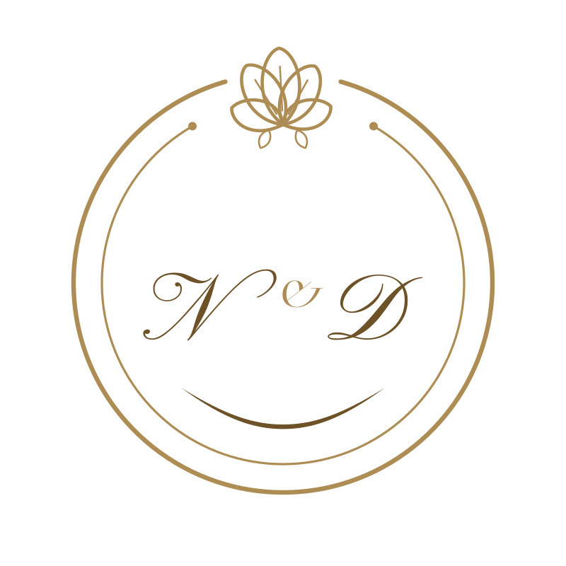
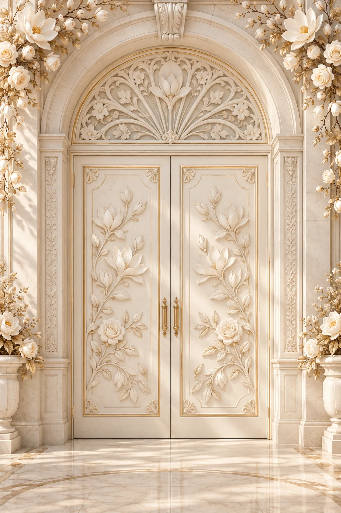
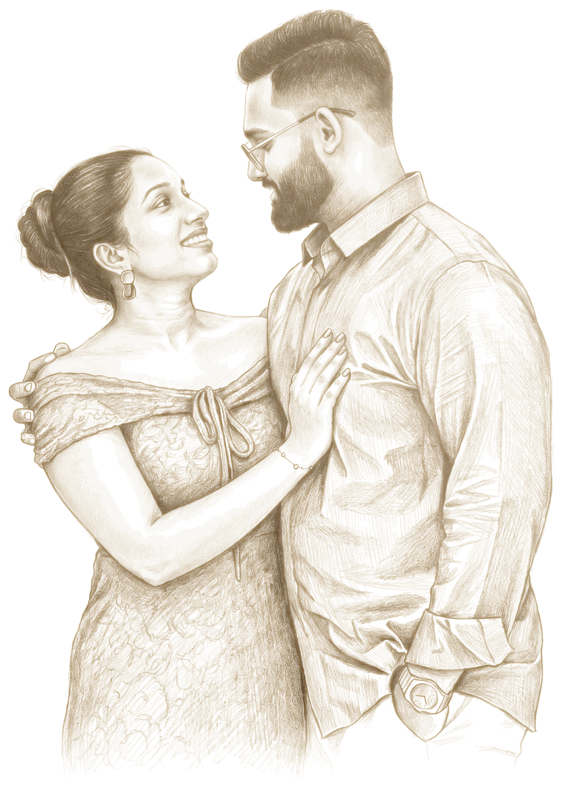

A keepsake for
Naveen&Dulanjani
How your wedding invitation
came to life
11 September 2026
<!-- for two dear friends --> <title> The Wedding of Naveen & Dulanjani </title> const day = '7 December 2026'; doors.open();
It began with a single line.
01

Doors that open
onto a garden
02
A monogram
of your own
03

Your portrait,
drawn line by line
04
Welcome
ආයුබෝවන්
Written in English
and in සිංහල
05
Dear you,
Every guest
greeted by name
61days in the making
103versions saved
2languages
1wedding
And then,
it was ready.
Your invitation · English
And once more, in
සිංහල
Your invitation · Sinhala
Naveen & Dulanjani
Monday · 7 December 2026
Centrium Ballroom, Avenra Gardens, Negombo
May you open this years from now,
and smile.
Made with love, by Ashan and Mark